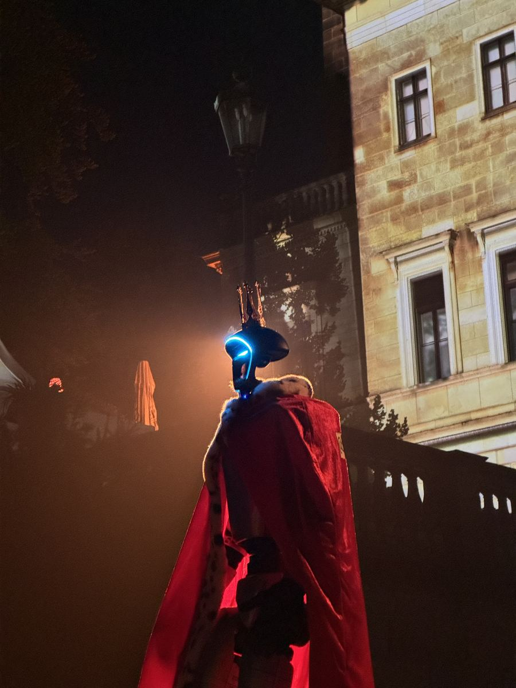

- Strona główna
- Blog
- Wigilia firmowa — pomysły
Przewodnik eventowy · Firmy
Wigilia firmowa: pomysły, atrakcje, menu i organizacja krok po kroku
Wigilia firmowa to najczęściej organizowana impreza w polskich firmach i jednocześnie ta, którą najłatwiej zepsuć: za długie przemówienie, zimne pierogi, brak programu. Co to właściwie jest, kiedy ją robić, ile kosztuje menu według publicznych cenników, 12 atrakcji i 6 zabaw, które pasują do grudnia, oraz to, o co pyta księgowość.

Wigilia firmowa ma dwa oblicza. Pierwsze: pracownicy siedzą przy długim stole, zarząd mówi za długo, barszcz stygnie, o 20:30 połowa osób wychodzi. Drugie: krótkie życzenia, dobre jedzenie, jeden pomysł na program, który wszyscy pamiętają do lutego. Różnica nie leży w budżecie, tylko w planie. Ten poradnik prowadzi przez organizację krok po kroku, podaje ceny menu z publicznych źródeł (stan: październik 2026) i zbiera pomysły na atrakcje, zabawy i prezenty.
Wigilia firmowa: co to jest i kiedy ją robić
Wigilia firmowa to spotkanie świąteczne pracowników organizowane przez firmę — kolacja z potrawami wigilijnymi, życzenia, zwykle podsumowanie roku, czasem prezenty i program. Nazwa myli: nie odbywa się 24 grudnia, tylko w jeden z dni roboczych między 10 a 20 grudnia, po pracy albo w godzinach pracy. Formalnie to impreza integracyjna w świątecznej oprawie — i tak traktuje ją księgowość (o tym niżej).
Trzy formaty, które spotyka się najczęściej:
- Kolacja w restauracji lub hotelu. Standard dla 20–150 osób. Restauracja daje menu, salę i obsługę; firma dokłada program.
- Spotkanie w biurze z cateringiem. Tańsze, mniej formalne, dobre dla małych zespołów i firm, które mają dużą kuchnię lub salę.
- Wigilia online lub hybrydowa. Dla zespołów rozproszonych: paczki wysłane do domów, spotkanie wideo z programem. Osobna sekcja niżej.
Jak zorganizować wigilię firmową krok po kroku
- Termin (wrzesień–październik). Sprawdź kalendarz firmy i wybierz czwartek lub piątek między 10 a 20 grudnia. Restauracje w dużych miastach mają grudniowe wieczory zajęte do końca października.
- Budżet. Ustal kwotę na osobę i podziel: jedzenie i napoje (zwykle 60–70%), sala, program, prezenty, dojazd. Orientacyjne ceny menu są w następnej sekcji.
- Miejsce. Sala wyłącznie dla Was (inne grupy obok psują nastrój), dojazd komunikacją, możliwość nagłośnienia, miejsce na program. Zapytaj o godzinę zakończenia i opłaty za przedłużenie.
- Menu. Wigilijne klasyki plus opcje wegańskie i bezglutenowe. Ustal formę: zasiadana kolacja (dłuższa, bardziej oficjalna) czy bufet (ludzie krążą, łatwiej o rozmowy).
- Program. Jedna atrakcja w tle (fotobudka świąteczna, barman z zimowymi koktajlami), jeden punkt dla wszystkich (podsumowanie roku z nagrodami, pokaz, koncert) i jedna zabawa, w którą każdy może wejść bez przymusu.
- Prezenty. Upominek od firmy albo wymiana w zespole (limit kwotowy, losowanie imion). Prezenty ze środków obrotowych są przychodem pracownika; finansowane z ZFŚS mieszczą się w rocznym limicie zwolnienia — sprawdź jego aktualną wysokość z księgową.
- Komunikacja. Zaproszenie 3–4 tygodnie wcześniej z godziną, adresem, dress code’em i planem powrotu. Prośba o potwierdzenie obecności i diety.
- Dzień wigilii. Jedna osoba trzyma harmonogram: życzenia maksymalnie 5 minut, kolacja, program, luźna część. Zdjęcia robi ktoś wyznaczony, nie „jakoś się zrobią”.
Menu na wigilię firmową i ceny
Dania, które goście oczekują na wigilijnym stole: barszcz z uszkami lub zupa grzybowa, pierogi z kapustą i grzybami, ryba (karp lub bardziej lubiane: łosoś, dorsz, sandacz), kapusta z grochem, śledzie, kutia, makowiec, piernik, kompot z suszu. Co drugi zespół ma dziś osoby na diecie roślinnej — pierogi, kapusta i grzyby są wegańskie z natury, ryby trzeba zastąpić.
Ceny z publicznych cenników i ofert (stan: październik 2026):
| Pozycja | Cena | Źródło |
|---|---|---|
| Catering imprezy firmowej, 50 osób | średnio 220 zł/os. (130 zł Zamość – 280 zł Warszawa); kelner 60–100 zł/h osobno | cenauslug.pl, 2026 |
| Dwa dania ciepłe i przekąski | 80–150 zł/os. | kb.pl, 2026 |
| Pełny catering kilkugodzinnej imprezy (3 dania ciepłe, ciasta, przekąski) | od ok. 120 zł/os., bogatsze menu do ok. 250 zł/os. | kb.pl, 2026 |
| Oferta hotelowa wigilii firmowej (hotel nad morzem, 2026) | przekąski zimne 55 zł, ciepłe 65 zł, desery 45 zł/os. | cennik hotelu, 2026 |
Do jedzenia dolicz napoje (ustal pakiet albo limit), salę (często w cenie przy minimalnej kwocie zamówienia) i obsługę. Przy 50 osobach samo menu z obsługą to około 11 000–13 000 zł według średniej z cenników; prostsza wersja bufetowa — mniej więcej połowa.
Atrakcje na wigilię firmową: 12 pomysłów
Wigilia ma spokojniejszy rytm niż impreza letnia: ludzie chcą porozmawiać, nie tańczyć do rana. Atrakcje powinny to uszanować — krótkie, ciepłe, w tle albo w jednym wspólnym momencie.
- Podsumowanie roku z nagrodami. Kategorie poważne i żartobliwe, krótkie laudacje, dyplomy. Najtańsza i najlepiej pamiętana atrakcja, jeśli ktoś przygotuje ją starannie.
- Warsztat pierników lub wieńców. Stoły, lukier, posypki; goście dekorują, zabierają do domu. Działa dla każdego wieku i poziomu nieśmiałości.
- Koncert kolęd lub akustyczny. Duet, kwartet, chór gospel — 30–40 minut po kolacji. Wspólne śpiewanie z tekstami na ekranie angażuje mocniej niż słuchanie.
- Loteria i tombola. Każdy ma los, nagrody od drobiazgów po jedną dużą. Wypełnia przerwę między kolacją a deserem.
- Wymiana prezentów. Losowanie imion tydzień wcześniej, limit 50–100 zł, prezenty rozdawane w trakcie wigilii z krótkim komentarzem.
- Fotobudka świąteczna. Ramka z logo i świątecznym motywem, wydruki. Fotobudka 360: 1 100–1 400 zł za 2 godziny; klasyczna według starszych danych 600–900 zł za 2 godziny (cenauslug.pl 2026, kb.pl 2023).
- Iluzjonista close-up. Między stolikami w trakcie kolacji, bez sceny. Średnio 3 727 zł za pokaz na imprezie firmowej (cenauslug.pl, 2026).
- Barman z zimowymi koktajlami. Grzane wino, jabłko z cynamonem, wersje bezalkoholowe. Barman mobilny średnio 1 806 zł (cenauslug.pl, 2026).
- Quiz świąteczny. Pytania o firmę w mijającym roku i o święta, drużyny przy stołach, nagrody. Prowadzi ktoś z zespołu.
- Karykaturzysta. Świąteczna pamiątka do domu; przy 60+ osobach dwóch rysowników.
- Pokaz świateł lub mapping na deser. Projekcja na stole albo ścianie na kilka minut; drogie, ale efektowne na wigilii dużej firmy.
- Robot humanoidalny w czapce Mikołaja. Wita gości, składa życzenia po polsku i w innych językach, rozdaje upominki, pozuje do zdjęć, tańczy. Dla gości to pierwszy humanoid widziany na żywo, dla firmy — zdjęcia z logo, które same trafiają do social mediów. Oferta: robot na mikołajki.

Zabawy na wigilię firmową, które nie zawstydzają
Zasada jedna: udział dobrowolny, czas krótki, nikt nie zostaje wywołany na środek sali wbrew sobie. Sześć sprawdzonych:
- Zgadnij, kto to. Zdjęcia pracowników z dzieciństwa na ekranie, drużyny zgadują. Zbierz zdjęcia dwa tygodnie wcześniej.
- Świąteczne kalambury. Hasła z firmy i ze świąt, dwie drużyny, trzy rundy.
- Konkurs na sweter. Zapowiedziany w zaproszeniu; nagroda dla najbrzydszego i najpiękniejszego.
- Nominacje „moment roku”. Każdy zespół zgłasza jeden moment z mijającego roku, sala głosuje oklaskami.
- Bingo firmowe. Karty z hasłami w rodzaju „ktoś, kto pracuje tu ponad 10 lat” — trzeba znaleźć taką osobę i zebrać podpis. Ludzie zaczynają rozmawiać z tymi, z którymi nigdy nie rozmawiali.
- Wspólne kolędowanie. Teksty na ekranie, jedna osoba z gitarą albo podkład. Trzy kolędy wystarczą.
Wigilia firmowa online i hybrydowa
Zespoły rozproszone potrzebują innego planu: paczka wysłana do domu (słodycze, kubek, składniki na wspólny drink), spotkanie wideo na 60–90 minut z programem (quiz online, warsztat prowadzony na żywo, podsumowanie roku z nagrodami wysyłanymi później). W wersji hybrydowej część osób jest w biurze, część zdalnie — wtedy program musi być widoczny dla obu grup: kamera na scenę, mikrofon dla prowadzącego, zabawy, które da się zrobić z obu stron ekranu.
Jak się ubrać na wigilię firmową
Najczęstsza odpowiedź: elegancko, ale bez przesady — smart casual lub business casual. Marynarka bez krawata, ciemne spodnie lub dżinsy bez przetarć; sukienka, spódnica albo spodnie z bluzką, biżuteria. Jeśli firma zapowiada konkurs na świąteczny sweter, sweter jest mile widziany. Dress code wpisz do zaproszenia — jedno zdanie oszczędza wielu osobom pytania w dniu imprezy.
Wigilia firmowa a podatki: VAT, koszty, przychód pracownika
Trzy pytania, które księgowość zadaje po każdej wigilii. Odpowiedzi poniżej opisują zasady ogólne; interpretacje się zmieniają, więc potwierdź je przed rozliczeniem.
- Koszty uzyskania przychodu. Wydatki na spotkanie integracyjne dla pracowników co do zasady mogą być kosztem, jeśli impreza ma cel integracyjny (udokumentuj go: zaproszenie, program, lista uczestników). Część dotycząca kontrahentów i gości z zewnątrz to reprezentacja, która kosztem nie jest. Alkohol organy skarbowe często kwestionują.
- VAT. Od usług gastronomicznych (restauracja) i noclegowych VAT nie podlega odliczeniu. Przy cateringu dowożonym część interpretacji dopuszcza odliczenie — to rozróżnienie warto przedyskutować z księgową przed wyborem formy.
- Przychód pracownika. Po wyroku Trybunału Konstytucyjnego z 8 lipca 2014 roku udział w imprezie integracyjnej nie jest dla pracownika przychodem. Inaczej z prezentami: finansowane ze środków obrotowych są przychodem, finansowane z ZFŚS korzystają z rocznego limitu zwolnienia.
Robot humanoidalny na wigilii firmowej
Robot humanoidalny Unitree G1 w czapce Mikołaja wita gości przy wejściu, podaje rękę, składa życzenia po polsku i w innych językach, rozdaje upominki, pozuje do zdjęć w koszulce z logo firmy. Po kolacji może otworzyć parkiet układem tanecznym albo zostać wśród gości na zdjęcia. Przed wigilią wgrywamy mu wiedzę o firmie i mijającym roku, więc odpowiada na pytania o to, co się wydarzyło.
Grudzień to dla nas sezon, więc rezerwuj minimum 3–4 tygodnie wcześniej. Pełny dzień od 5 500 zł netto, krótsze wejście (dwie–trzy godziny na wigilii) wyceniamy indywidualnie i taniej. W cenie operator, transport, branding i ubezpieczenie OC; bez zaliczki, faktura po wydarzeniu. Oferta: robot na mikołajki i spotkanie świąteczne, roboty na eventy firmowe.
Checklista wigilii firmowej
- Termin między 10 a 20 grudnia, sala zarezerwowana do końca października.
- Budżet na osobę z podziałem: menu, napoje, sala, program, prezenty.
- Menu z opcjami wegańskimi i bezglutenowymi, potwierdzone diety.
- Życzenia zarządu do 5 minut; podsumowanie roku przygotowane z nagrodami.
- Jedna atrakcja w tle, jeden wspólny punkt, jedna zabawa dobrowolna.
- Prezenty: forma finansowania ustalona z księgową (ZFŚS czy środki obrotowe).
- Zaproszenie z dress code’em, dojazdem i powrotem; potwierdzenia obecności.
- Wykonawcy potwierdzeni tydzień przed; wymagania techniczne przekazane do sali.
- Osoba od zdjęć i zgody na publikację wizerunku.
- Faktury VAT i opis celu integracyjnego do dokumentacji.
Najczęstsze pytania
To przedświąteczne spotkanie pracowników organizowane przez firmę, zwykle w drugiej lub trzeciej dekadzie grudnia: kolacja z potrawami wigilijnymi, życzenia od zarządu, często podsumowanie roku, prezenty i program. Nie ma nic wspólnego z Wigilią 24 grudnia poza nazwą i menu — to impreza integracyjna w świątecznej oprawie.
Najczęściej między 10 a 20 grudnia, w czwartek lub piątek po pracy. Ostatni tydzień przed świętami jest zły: urlopy, wyjazdy, zmęczenie. Restauracje i sale na grudzień rezerwuje się już w październiku, a w dużych miastach we wrześniu. Alternatywa: spotkanie „noworoczne” w styczniu, tańsze i spokojniejsze.
Według publicznych cenników 2026: catering imprezy firmowej średnio 220 zł od osoby (130–280 zł zależnie od miasta), prostsze menu z dwoma daniami ciepłymi i przekąskami 80–150 zł. Przykładowa oferta hotelowa wigilii firmowej z 2026 roku: przekąski zimne 55 zł, ciepłe 65 zł, desery 45 zł od osoby. Do tego sala, program i prezenty — realnie 150–400 zł na osobę.
Nie. Udział w spotkaniu integracyjnym poza godzinami pracy jest dobrowolny i nie można za nieobecność wyciągać konsekwencji. Jeśli wigilia odbywa się w godzinach pracy, pracownik jest w pracy — i to jest najprostszy sposób na wysoką frekwencję.
Wydatki na wigilię dla pracowników co do zasady mogą być kosztem uzyskania przychodu, jeśli spotkanie ma cel integracyjny i jest udokumentowane; część dla kontrahentów to reprezentacja. VAT od usług gastronomicznych i noclegowych nie podlega odliczeniu, przy cateringu dowożonym część interpretacji je dopuszcza. Alkohol urzędy często kwestionują. Po wyroku Trybunału Konstytucyjnego z 2014 roku udział w imprezie integracyjnej nie jest przychodem pracownika. Zawsze potwierdź z księgowym.